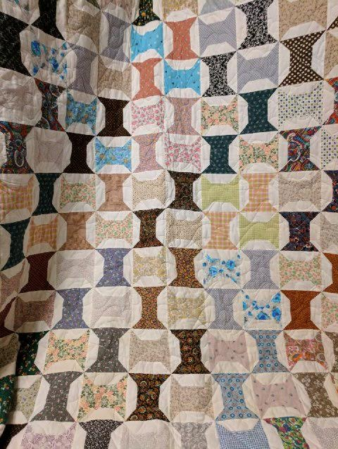
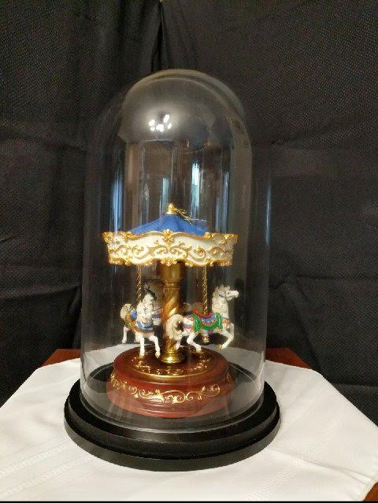

September 2nd- Summer Fundraising Drawings
To support our efforts to renovate and create a home for our vintage carousel, members of the
Friends of the Cottage Grove Carousel have donated these items for three separate drawings. The
drawings will be done live on KNND Radio 1400-AM at 10 am on Saturday, September 2. Winners will be
announced on the air and notified by phone to determine how they wish to pick up their
prize.
Tickets are $5 each. To enter the drawing call Cindy at 541.915.0113 to arrange for
payment no later than Friday, Sept. 1 at Noon. (See Items Below)
Wooden Carousel Rocking Horse (designed for ages 3-10)
Donated by Alice Nowicki and Ken Schwieger. ($189.00 value).
Handmade Quilt: "Spinning Spools" pattern made from old dresses by Berta Jarrard in 1993
Donated by Theresa and Russ McGuire. ($400.00 value)
San Francisco Carousel Music Box inside glass display case
Donated by Alice Nowicki and Ken Schwieger. ($130.00 value)